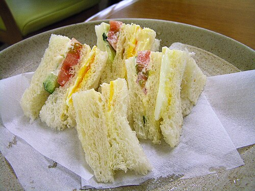

Sandwich
A sandwich is a dish typically consisting variously of meat, cheese, sauces, and vegetables used as a filling between slices of bread, or placed atop a slice of bread; or, more generally, any dish in which bread serves as a container or wrapper for another food type, and allows it to be a finger food. The sandwich began as a portable, convenient food in the Western world, though over time it has become prevalent worldwide.
There has been social media debate over the precise definition of sandwich, specifically whether a hot dog or open sandwich can be categorized as such. Other items, like hamburgers and burritos, were also considered. In the United States, the Department of Agriculture (USDA) and the Food and Drug Administration (FDA) are the responsible agencies for protecting the definition of sandwich. The USDA uses the definition, "at least 35% cooked meat and no more than 50% bread" for closed sandwiches, and "at least 50% cooked meat" for open sandwiches.However, the same USDA manual determines that burritos and fajitas are "sandwich-like" and frankfurters are "sandwich type", while stromboli is explicitly excluded. In Britain, the British Sandwich Association defines a sandwich as "any form of bread with a filling, generally assembled cold"; a definition which includes wraps and bagels, but potentially excludes dishes assembled and served hot, such as burgers.
Sandwiches are a popular type of lunch food, taken to work, school, or picnics to be eaten as part of a packed lunch. The bread is frequently coated with condiments such as mayonnaise or mustard to enhance its flavour and texture, but may be served plain ("dry"). As well as being homemade, sandwiches are also widely sold in various retail outlets and can be served hot or cold. Although savoury sandwiches—such as deli meat sandwiches—are in the majority, sweet sandwiches—such as jam sandwiches and fluffernutters—form their own category.
The sandwich is named after the inventor of a certain roast beef sandwich in 18th century England, John Montagu, 4th Earl of Sandwich. The Wall Street Journal has described it as Britain's "biggest contribution to gastronomy".
Sandwich

A bologna sandwich
History and etymology
Early sandwiches and sandwich-like foods
The use of some kind of bread or bread-like substance to lie under some other food, or to scoop it up and enclose or wrap it, is found in many cultures historically. Before being known as a "sandwich", this food combination seems to have been known as "bread and meat" or "bread and cheese".[8] These two phrases are found throughout English drama from the 16th and 17th centuries.[8]
In the first century BCE, the ancient Jewish sage Hillel the Elder is said to have wrapped meat from the Paschal lamb and bitter herbs in a soft matzah—flat, unleavened bread—during Passover in the manner of a modern wrap made with flatbread.[11] Flat breads of only slightly varying kinds have long been used to scoop or wrap small amounts of food en route from platter to mouth throughout Western Asia and northern Africa. From Morocco to Ethiopia to India, bread is usually baked in flat rounds, contrasting with the European loaf tradition.
During the Middle Ages in Europe, thick slabs of coarse and usually stale bread, called "trenchers," were used as plates.[12] After a meal, the food-soaked trencher was fed to a dog or to beggars at the tables of the wealthy, and eaten by diners in more modest circumstances. The immediate culinary precursor with a direct connection to the English sandwich was to be found in the Netherlands of the seventeenth century, where the naturalist John Ray observed[13][14] that in the taverns beef hung from the rafters "which they cut into thin slices and eat with bread and butter laying the slices upon the butter"—explanatory specifications that reveal the Dutch belegde broodje, open-faced sandwich, was as yet unfamiliar in England. The word "sandwich" appears, referring to a certain roast beef sandwich in England.
Initially perceived as food that men shared while gaming and drinking at night, the sandwich slowly began appearing in polite society as a late-night meal among the aristocracy. The sandwich is named after John Montagu, 4th Earl of Sandwich, an eighteenth-century English aristocrat.[8][9] It is commonly said that Lord Sandwich, during long sessions of cribbage and other card games at public gambling houses, would order his valet to bring him roast beef between two pieces of toasted bread.[9] He was fond of this form of food because it allowed him to continue gambling while eating, without the need for a fork, and without getting his cards greasy from eating meat with his bare hands. The dish then grew in popularity in London, and Sandwich's name became associated with it.[8] The rumour in its familiar form appeared in Pierre-Jean Grosley's Londres (Neuchâtel, 1770), translated as A Tour to London in 1772;[15] Grosley's impressions had been formed during a year in London in 1765. An alternative is provided by Sandwich's biographer, N. A. M. Rodger, who suggests Sandwich's commitments to the Navy, and to politics and the arts, mean the first sandwich was more likely to have been consumed at his desk.
The sandwich's popularity in Spain and England increased dramatically during the nineteenth century, when the rise of industrial society and the working classes made fast, portable, and inexpensive meals essential.[16] In London, for example, at least seventy street vendors were selling ham sandwiches by 1850; during that decade sandwich bars also became an important form of eating establishment in western Holland, typically serving liver and salt beef sandwiches.[17]
In the United States, the sandwich was first promoted as an elaborate meal at supper. By the early 20th century, as bread became a staple of the American diet, the sandwich became the same kind of popular, quick meal as was already widespread in the Mediterranean.[16]
Portrait of the Earl of Sandwich by Thomas Gainsborough, 1783, after whom the sandwich is named
Language
In the US, a court in Boston, Massachusetts, ruled in 2006 that a sandwich includes at least two slices of bread[1] and "under this definition, this court finds that the term 'sandwich' is not commonly understood to include burritos, tacos, and quesadillas, which are typically made with a single tortilla and stuffed with a choice filling of meat, rice, and beans."[18] The issue stemmed from the question of whether a restaurant that sold burritos could move into a shopping centre where another restaurant had a no-compete clause in its lease prohibiting other "sandwich" shops. Also in the US, a court in Indiana ruled in 2024 that tacos and burritos are sandwiches, specifically that "The Court agrees with Quintana that tacos and burritos are Mexican-style sandwiches". The court further ruled that such a definition of sandwich would also apply to a "restaurant that serves made-to-order Greek gyros, Indian naan wraps, or Vietnamese banh mi".[19] The state of New York has a definition of "sandwich" that explicitly includes burritos, gyros, hot dogs, and wraps and pita sandwiches.[20]
In Spain, where the word sandwich is borrowed from the English language,[21] it refers to a food item made with English sandwich bread.[22] It is otherwise known as a bocadillo. Similar usage applies in other Spanish-speaking cultures, such as Mexico, where the word torta is also used for a popular variety of roll-type sandwiches.
In the UK and Australia, the term sandwich is more narrowly defined than in the US: it usually refers to an item that uses sliced bread from a loaf.[23] An item with similar fillings but using an entire bread roll cut horizontally in half, is generally referred to as a roll, or with certain hot fillings, a burger. However, in Australia hot sliced (not ground) beef between two slices of toasted bread is referred to as a steak sandwich: the sliced loaf bread distinguishes the steak sandwich from a burger.[citation needed]
The verb to sandwich has the meaning "to position anything between two other things of a different character, or to place different elements alternately,"[24] and the noun sandwich has related meanings derived from this more general definition. For example, an ice cream sandwich consists of a layer of ice cream between two layers of cake or biscuit.[25] Similarly, Oreos and Custard creams are described as sandwich biscuits (UK/Commonwealth) or sandwich cookies (US) because they consist of a soft filling between the baked layers.[26] In corporate finance, Dutch Sandwich and Double Irish with a Dutch sandwich refer to schemes for tax evasion.
The word butty, originally referring to a buttered slice of bread,[27] is common in some northern and southern parts of England and Wales as a slang synonym for "sandwich," particularly to refer to certain kinds of sandwiches including the chip butty, bacon butty, or sausage butty.[28] Sarnie is a similar colloquialism.[29] Likewise, the word sanger is used for sandwich in Australian slang.[30] The colloquial Scottish word piece may refer either to a sandwich or to a light meal, especially one that includes a sandwich. For example, the phrase jeely piece refers to a jam sandwich.[31]
The colloquial form "sammich" (alternatively, "sammidge") is used in the Southeastern United States.[32] In Japanese, sando or sandoichi is used.
Pre-made sandwiches

Pre-packaged sandwiches
Sandwiches have been widely sold in cafes, railway stations, pubs and diners since the invention of sliced bread in the 1920s.[34] Sandwiches kept unwrapped, drying up and edges curling, until they were sold, were widely found in Britain until the 1970s. Cafes and buffets in railway stations and on trains were notorious, and the term "British Rail sandwich" was often used satirically.
In 1979, the British store chain Marks & Spencer introduced a small range of chilled, pre-made sandwiches sold in wedge-shaped boxes, sealed to keep them fresh.[34] As they proved popular, a small experiment involving five stores rapidly grew to cover more than one hundred stores. Within a year, the store was looking for ways to manufacture sandwiches at an industrial scale. By the end of the decade, the British sandwich industry had become worth £1bn.[35] In 2017, the British sandwich industry made and sold £8 billion worth of sandwiches.[35]
Gallery
Cross section of a sandwich
Sandwich making

Chicken breast sandwich
Reuben sandwich
Grilled cheese sandwich
Peanut butter and jelly sandwich
Jambon-beurre, a French ham sandwich
Club sandwich
Croque-monsieur, a hot sandwich

Hamburger
Porilainen, a Finnish burger-like sandwich
Philadelphia-style cheesesteak (type of submarine sandwich)
Smoked meat sandwich
French bread sandwich with fries
Shawarma sandwich

Doner sandwich
Dutch open sandwich with smoked horse
Sausage, egg and cheese sandwich
Smoked salmon and cream cheese sandwiches

Crustless English sandwiches